Hobbies
Chef
Cooking has become one of my greatest passions in recent years. I specialize in Cantonese cuisine, particularly in making soups, pan-frying steaks, and preparing salmon. Honestly, I didn't know how to cook before coming to the USA. But gradually, I discovered the joy of cooking. It helps me relax and unwind after intense research work, providing a balance to the mental demands of academic life. Now, cooking has become a way for me to understand different cultures through their cuisines. I believe that good food has the power to bring people together and create lasting memories.
Chef Huang (黄小厨)
Chicken Clay Pot (啫啫鸡煲)
Seafood Tofu Clay Pot (海鲜豆腐煲)
Beef Clay Pot (牛肉煲)
Fish-Fragrant Eggplant Clay Pot (鱼香茄子煲)
Beef Brisket Clay Pot (牛腩煲)
Basketball
As an avid NBA fan, my first jersey was Ming Yao's Houston Rockets uniform. During high school, I would purchase Slam Dunk magazine every week. LeBron has probably had the most profound impact on me. And, Kobe's "Mamba Mentality" has deeply influenced my way of dealing with challenges. I was fortunate enough to live in Wisconsin, where Chinese basketball star Jianlian Yi played for the Milwaukee Bucks. I remember how happy I was the day he was drafted by Milwaukee. Also, Giannis Antetokounmpo's basketball journey deeply touched me—from a skinny kid to an NBA champion.
I've been injured many times in my basketball journey, such as sprained ankles and scraped knees. The most severe setback occurred in early 2024 when I suffered a lower back injury requiring surgery. For the first two weeks, I was essentially immobile, confined to bed rest. However, these challenges never diminished my passion for the game. As Iverson famously said, "What doesn't kill you makes you stronger." Basketball has not only strengthened my body but also taught me invaluable life lessons about teamwork, perseverance, and rising after every fall.
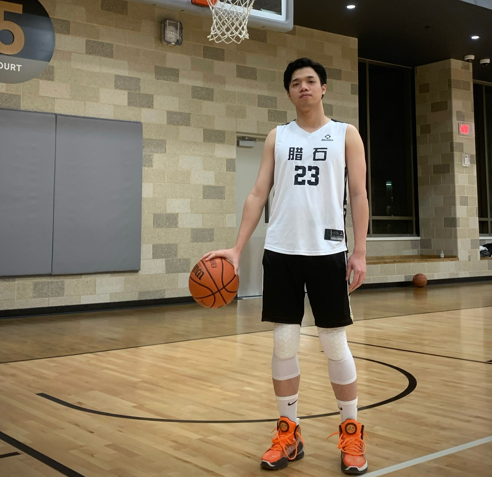
Bakke Gym, UW-Madison (2023)
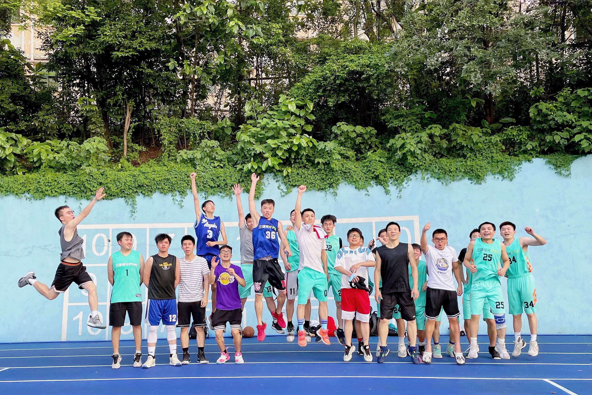
Basketball Team Photo (2021)
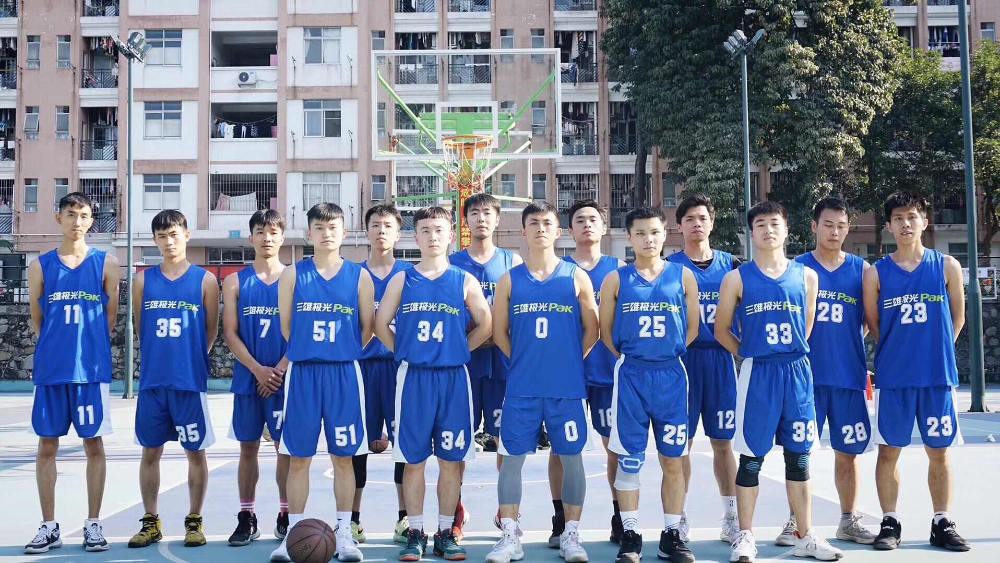
Basketball Team Photo (2020)
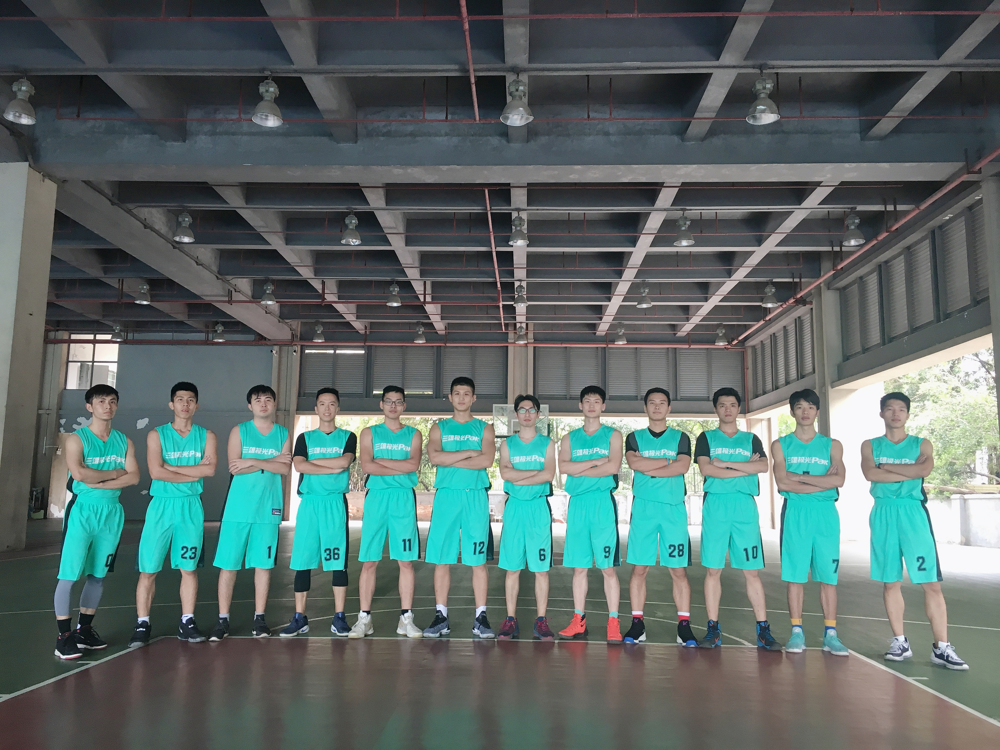
Basketball Team Photo (2019)
Basketball Team Highlights (2018)
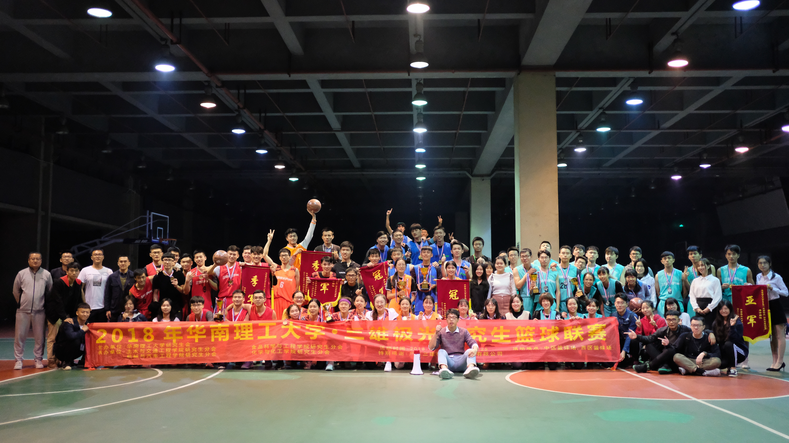
Basketball Team Photo (2018)
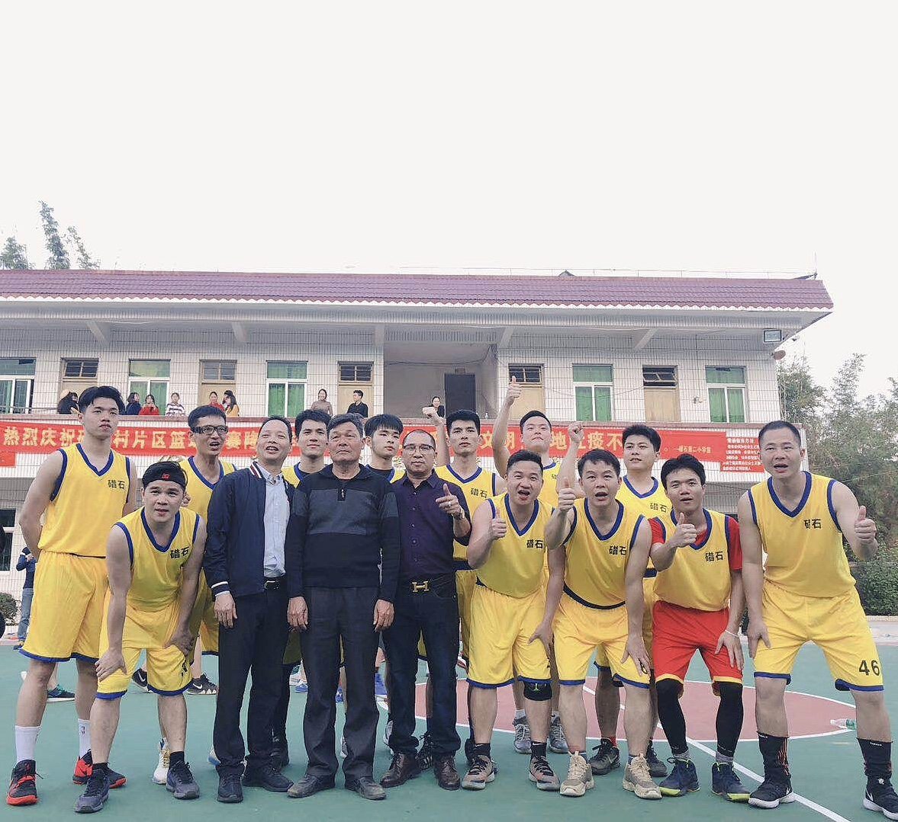
Basketball Team Photo (2018)
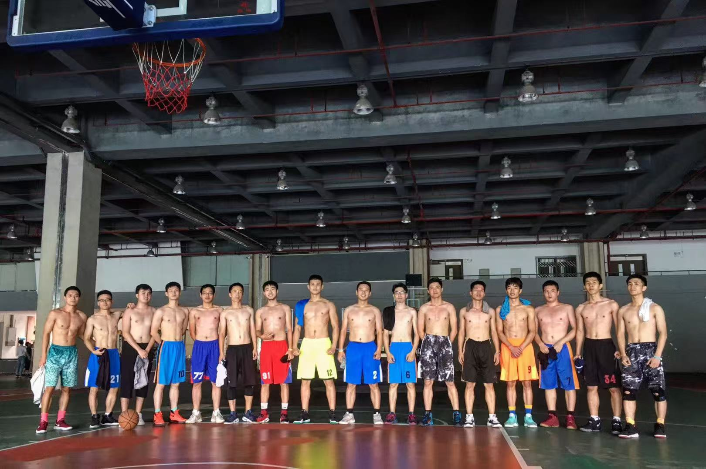
Basketball Team Photo (2018)
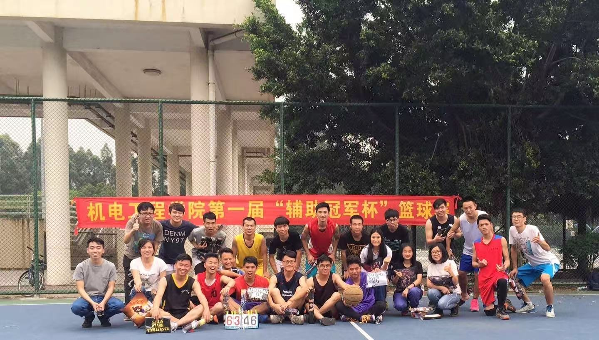
Basketball Team Photo (2017)
Basketball Team Photo (2017)
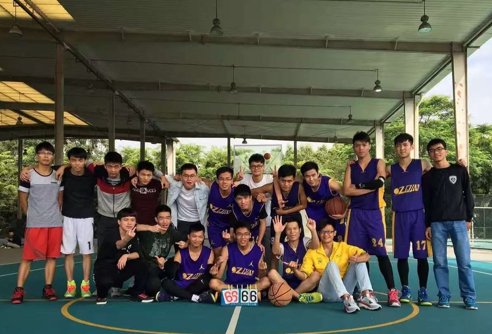
Basketball Team Photo (2016)
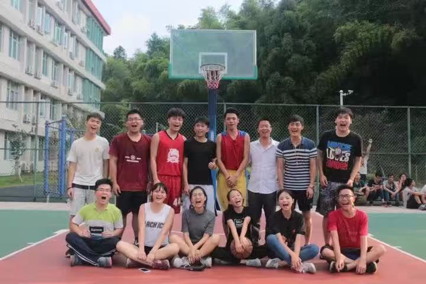
Basketball Team Photo (2016)
Basketball Team Highlights (2015)
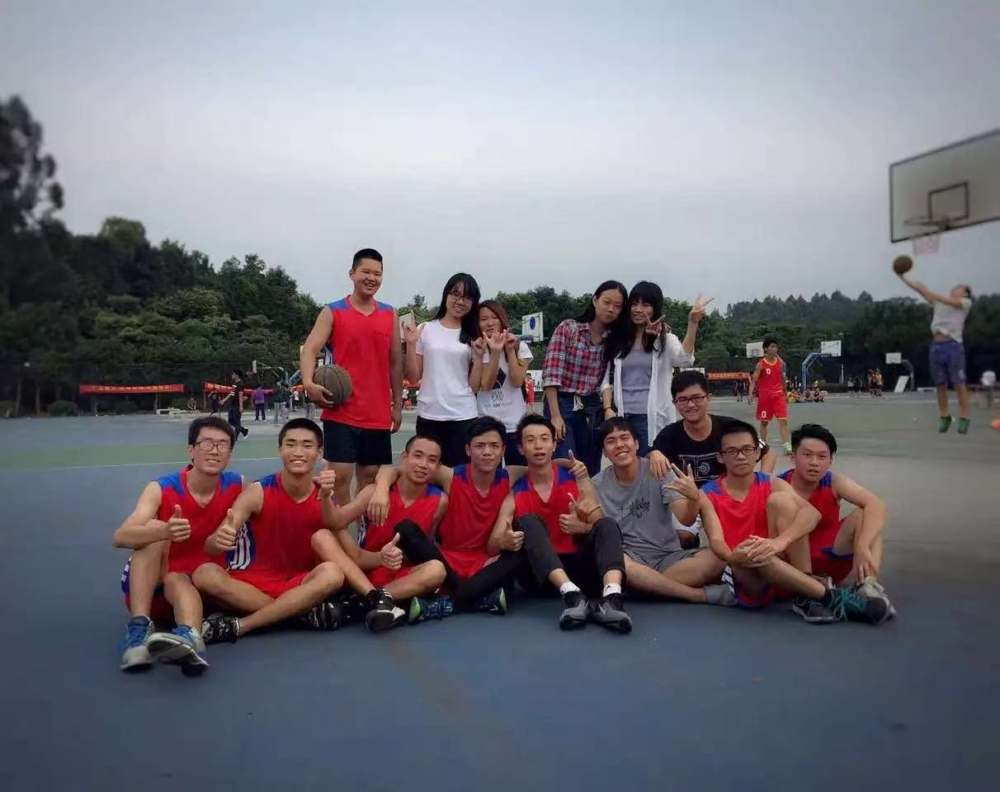
Basketball Team Photo (2015)
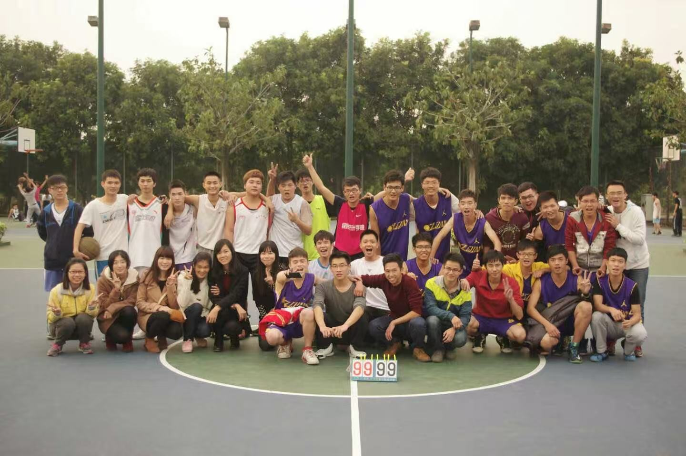
Basketball Team Photo (2014)
Photography
I have a deep passion for photography, specializing in documentary and journalistic photography. My philosophy is: "A photograph is a witness to a moment in history." I co-founded a creative media studio with senior students, focusing on MG animation and micro-film production. Our studio's original character "Zuiyao B (最耀B)" received over 100 million views across platforms. You can find our works on YouTube and Bilibili. My micro-film "When Drinking Water, One Should Not Forget Its Source (饮水思源)" won the "Best Film Silver Award" (¥40,000) [Certificate]. Additionally, I was honored to curate and direct the college graduation commemorative video "The Journey (走过)".
- Vice President, Photography Association (2016.10-2017.10)
• Regularly contributed photos to the university's official website
• Postcards I created from my photography work here - Member, Guangzhou Photography Association
- Photographer, Visual China (视觉中国)
- Member, Astronomy Club (2016.09-2017.09)